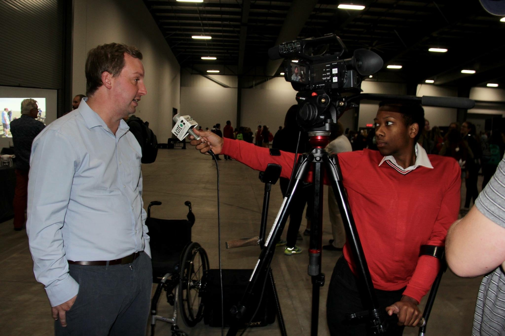

Mon parcours professionnelle jusqu'à présent
Depuis les cinq dernières années, je suis sur une quête pour atteindre mon but de faire partie du cercle des journalistes sportifs ou du e-sport. À partir de la fin de ma première année de collège, j'ai décidé de partager mon temps entre les salles de classes et l'aréna de l'U d'O. En effet, depuis maintenant quelques années, j'ai décidé de prendre un poste de collaborateur avec le journal francophone indépendant La Rotonde qui est un journal ayant pour cible les activités se passant sur le campus de l'Université d'Ottawa
À mes débuts, je me spécialisait dans le monde du hockey masculin et féminin. J'avais la tâche de courvrir et faire des résumé des parties des deux équipes de hockey des Gee-Gees. Au cours de mon parcours, j'ai eu la chance d'expandre mes horizons et j'ai commencé à faire des entrevures plus personnelles avec les joueurs/joueuses.
Quoi que je continue à avoir une passion pour le hockey, j'ai décidé de prendre une route totalement différente de ce que je faisais avant. Pendant l'été 2020, j'ai décidé de me mouiller les orteilles dans le monde du sport électronique ou E-sport. J'ai toujours voulu couvrir les activités d'une équipe d'E-sport et j'ai eu la chance de rendre ce rêve en réalité à partir de Septembre 2020 alors que j'ai donnée une entrevue avec la directrice générale de l'équipe de League of Legends.
J'ai récemment coché un autre objectif de ma liste alors que j'ai finalement pu couvrir une série du jeu que j'adore alors que l'équipe de l'Université d'Ottawa affrontait celle de Western Ontario.
Voici de ce que j'ai l'air quand je suis en mission!
